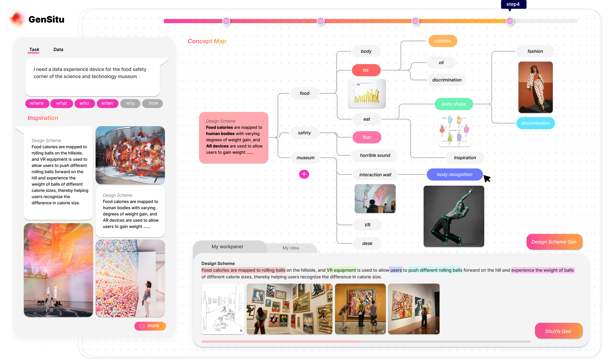

IdeoPhys：Creativity Supporting Tool for Situated Visualizations.
Situated visualization, by integrating data directly into relevant contexts, enhances understanding, communication, and engagement through physical referents and environmental cues. However, designing such visualizations demands multifaceted skills and heavily relies on designers' expertise. To address this challenge, we first conduct a preliminary study with expert designers to understand the common design processes of situated visualization and summarize the key design considerations. Then, we collect a dataset comprising 229 cases sourced from online repositories, establishing a comprehensive design space for creating situated visualization. Drawing upon the design considerations and the design space, we propose a co-creative pipeline with generative AI and develop a prototype system, named IdeoPhys, to streamline the ideation and design scheme formulation processes. Through an in-lab user study and expert interviews, we evaluate IdeoPhys, garnering both quantitative and qualitative feedback that attests to its usability and effectiveness in facilitating the creation of situated visualization designs.
IdeoPhys is an ongoing scientific research project. Currently, all the content has been revised. This is the version of the first draft, and it is expected to be submitted for publication.
Year：2024.